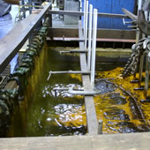

Hexavalent Chromium
 ShareCompartir
ShareCompartir

Overview
Hexavalent chromium (Cr(VI)) compounds are a large group of chemicals with varying chemical properties, uses, and workplace exposures. Their properties include corrosion-resistance, durability, and hardness. Workers may be exposed to airborne Cr(VI) when these compounds are manufactured from other forms of chromium (e.g., the production of chromates from chromite ore); when products containing Cr(VI) are used to manufacture other products (e.g., chromate-containing paints, electroplating); or when products containing other forms of chromium are used in processes that result in the formation of Cr(VI) as a by-product (e.g., welding).
NIOSH considers all Cr(VI) compounds to be occupational carcinogens. Cr(VI) is a well-established carcinogen associated with lung, nasal, and sinus cancer. Some of the industries in which the largest numbers of workers are exposed to high concentrations of airborne Cr(VI) compounds include electroplating, welding, and chromate painting. A hierarchy of controls, including elimination, substitution, engineering controls, administrative controls, and the use of personal protective equipment, should be followed to control workplace exposures. Dermal exposure to Cr(VI) should also be prevented to reduce the risk of skin irritation, corrosion, ulcers, sensitization, and allergic contact dermatitis.
NIOSHTIC-2 Search
NIOSHTIC-2 search results on Hexavalent Chromium
NIOSHTIC-2
is a searchable bibliographic database of occupational safety and health publications, documents, grant reports, and journal articles supported in whole or in part by NIOSH.
NIOSH Resources
NIOSH Criteria for a Recommended Standard: Occupational Exposure to Hexavalent Chromium
NIOSH Publication No. 2013-128
NIOSH Pocket Guide to Chemical Hazards
Immediately Dangerous to Life and Health (IDLH) Chromic acid and Chromates
- Chromic acid and Chromates
Criteria for a recommended standard: Welding, brazing, and thermal cutting [1988]
NIOSH Publication No. 88-110
Current Intelligence Bulletin 4: Chrome pigment [1976]
Criteria for a Recommended Standard: Occupational Exposure to Chromium (VI) [1975]
HEW (NIOSH) Publication No. 76-129
Criteria for a Recommended Standard: Occupational Exposure to Chromic Acid [1973]
NIOSH Publication No. 73-11021
Sampling and Analysis
NIOSH Manual of Analytical Methods
- NIOSH Method 7605 - Hexavalent Chromium by Ion Chromatography [2003] [PDF - 102 KB]
- NIOSH Method 7703 - Hexavalent Chromium by Field-Portable Spectrophotometry [2003] [PDF - 109 KB]
- NIOSH Method 9101 - Hexavalent Chromium in Settled Dust Samples [1996] [PDF - 6 KB]
OSHA Chemical Sampling Information: Chromium (VI)
Selected Publications
Ashley K, Applegate GT, Marcy AD, Drake PL, Pierce PA, Carabin N, Demange M [2009]. Evaluation of sequential extraction procedures for soluble and insoluble hexavalent chromium compounds in workplace air samples . J Environ Monit 11(2):318-325.
Ashley K, Howe AM, Demange M, Nygren O [2003]. Sampling and analysis considerations for the determination of hexavalent chromium in workplace air . J Environ Monit 5(5):707-716.
Blade LM, Yencken MS, Wallace ME, Catalano JD, Khan A, Topmiller JL, Shulman SA, Martinez A, Crouch KG, Bennett JS [2007]. Hexavalent chromium exposures and exposure-control technologies in American enterprise: results of a NIOSH field research study . J Occup Environ Hyg 4(8):596-618.
Boiano JM, Wallace ME, Sieber WK, Groff JH, Wang J, Ashley K [2000]. Comparison of three sampling and analytical methods for the determination of airborne hexavalent chromium . J Environ Monit 2(4):329-33.
Hazelwood KJ, Drake PL, Ashley K, Marcy D [2004]. Field method for the determination of insoluble or total hexavalent chromium in workplace air . J Occup Environ Hyg 1(9):613-619.
Keane M, Stone S, Chen B, Slaven J, Schwegler-Berry D, Antonini J [2009]. Hexavalent chromium content in stainless steel welding fumes is dependent on the welding process and shield gas type . J Environ Monit 11(2):418-424.
Park RM, Bena JF, Stayner LT, Smith RJ, Gibb HJ, Lees PSJ [2004]. Hexavalent chromium and lung cancer in the chromate industry: a quantitative risk assessment . Risk Anal 2004 24(5):1099-1108.
Park RM, Stayner LT [2006]. A search for thresholds and other nonlinearities in the relationship between hexavalent chromium and lung cancer . Risk Anal 26(1):79-88.
Health Hazard Evaluations
The Hazard Evaluations and Technical Assistance Branch (HETAB) of NIOSH conducts field investigations of possible health hazards in the workplace. HETAB has conducted many field investigations of potential occupational exposure to hexavalent chromium. For more information on the health hazard evaluation (HHE) program and to search for HHEs involving hexavalent chromium exposure link to: Health Hazard Evaluation (HHE) home page .
Other Resources
OSHA Safety and Health Topics: Hexavalent Chromium
OSHA Small Entity Compliance Guide for the Hexavalent Chromium Standards
OSHA Guidance: Preventing Skin Problems from Working with Portland Cement
OSHA Fact Sheet: Health Effects of Hexavalent Chromium [PDF - 20 KB]
Agency for Toxic Substances Disease Registry (ATSDR) - ToxFAQs: Chromium VI
En español
ATSDR Case Studies in Environmental Medicine (CSEM)
ATSDR Toxicological Profile for Chromium, 2012
U.S. EPA Toxicological Review of Hexavalent Chromium (1998) [PDF - 512 KB]
U.S. EPA Integrated Risk Information System Information on Chromium (VI) [1998]
National Toxicology Program 12th Report on Carcinogens: Chromium Hexavalent Compounds
U.S. Department of Energy Safety Bulletin 2006-01: Hexavalent Chromium (Update) [PDF - 595 KB]
- Page last reviewed: January 23, 2013
- Page last updated: January 23, 2013
- Content source:
- National Institute for Occupational Safety and Health Education and Information Division